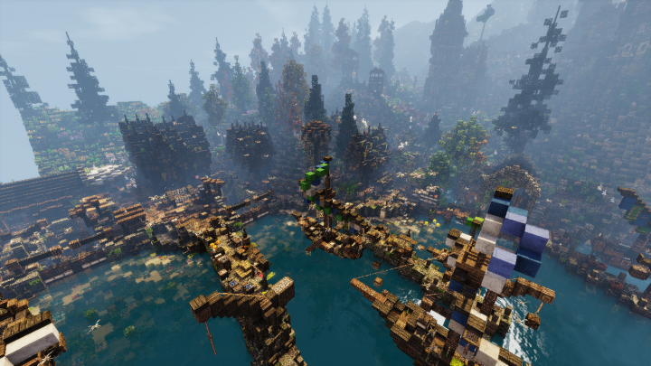
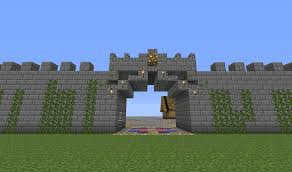
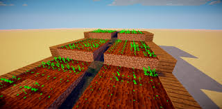

🏰 내 마인크래프트 월드: 판타지 왕국
홈
내 월드 소개
생존 일지
추천 모드 & 팁
서버 소개
📜 월드 소개
이 월드는 내가 3개월 동안 혼자 만든 판타지 성과 마을이 있는 생존 기반 월드입니다. 중세풍 건축물과 레드스톤 자동화 시스템을 접목해 재미있게 꾸몄어요!
🖼️ 스크린샷 갤러리
  
✨ 주요 특징
거대한 판타지 스타일 성
NPC 마을과 연결된 철도 시스템
레드스톤 자동 밀/감자/당근 농장
지하 요새 및 엔더 포탈 확보
엔더드래곤 격파 완료!
⬇️ 월드 다운로드
월드 다운로드 (.zip)